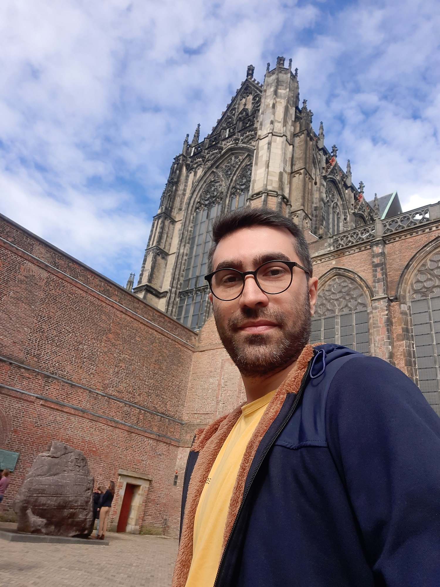

Hamid Sadeghi
AI Engineer with a PhD in Electrical Engineering and 15+ years of hands-on experience in applied machine learning, computer vision, and NLP.
Artificial IntelligenceComputer VisionMachine LearningPattern RecognitionFacial Image AnalysisNLP
Education
PhD · 2019
Electrical Engineering, Electronics
Amirkabir University of Technology
MSc · 2013
Electrical Engineering, Digital Electronics
Amirkabir University of Technology
Journals (9)
- HistNet: Histogram-based convolutional neural network with Chi-squared deep metric learning for facial expression recognitionH. Sadeghi, A.A. Raie · Information Sciences, 608, 472-488, 2022
- Histogram distance metric learning for facial expression recognitionH. Sadeghi, A.A. Raie · J. Visual Communication and Image Representation, 62, 152-165, 2019
- Human vision inspired feature extraction for facial expression recognitionH. Sadeghi, A.A. Raie · Multimedia Tools and Applications, 78(21), 30335-30353, 2019
- 2D facial expression recognition via 3D reconstruction and feature fusionA. Moeini, K. Faez, H. Sadeghi, H. Moeini · J. Visual Communication and Image Representation, 35, 1-14, 2016
- Decorrelated local binary pattern for robust face recognitionV. Ghanbari, H. Sadeghi · Int. J. Advanced Biotechnology and Research, 7(5), 1283-1291, 2016
- Suitable models for face geometry normalization in facial expression recognitionH. Sadeghi, A.A. Raie · J. Electronic Imaging, 24(1), 013005, 2015
- Facial expression recognition using texture description of displacement imageH. Sadeghi, A.A. Raie, M.R. Mohammadi · J. Information Systems and Telecommunication, 2(8), 205-212, 2014
- یادگیری متریک براساس فاصله χ2 سریع برای دستهبندی دادههای هیستوگرامی با دستهبندی کننده KNNح. صادقی، ا. ا. راعی · مجله مهندسی برق دانشگاه تبریز، جلد 49، شماره 2، صفحات 657-668، تابستان 98
- شناسایی حالت چهره با استفاده از نرمالیزاسیون هندسی و تبدیل ویولت مختلط Dual-Treeح. صادقی، ف. آیتاللّهی، ا. ا. راعی · مجله مهندسی برق دانشگاه تبریز، جلد 45، شماره 3، صفحات 79-87، پاییز 94
Conferences (17)
- Approximated chi-square distance for histogram matching in facial image analysis: face and expression recognitionH. Sadeghi, A.A. Raie · MVIP 2017, Isfahan, Iran, pp. 188-191, IEEE, 2017
- Illumination invariant visual tracking via Kalman filtering and efficient feature matchingV. Ghanbari, H. Sadeghi, M.R. Nargesi · 1st Int. Conf. on New Research Achievements in Electrical and Computer Engineering, Tehran, 2016
- Semi-dynamic facial expression recognition based on masked displacement imageH. Sadeghi, A.A. Raie · AISP 2013, Tehran, Springer, pp. 100-108, 2014
- Facial expression recognition using geometric normalization and appearance representationH. Sadeghi, A.A. Raie, M.R. Mohammadi · MVIP 2013, Zanjan, Iran, IEEE, pp. 159-163, 2013
- Probabilistic facial expression recognition generic elastic models from a single image for large pose face synthesis and recognition and reconstructionA. Moeini, K. Faez, H. Sadeghi · IEEE ICMLA 2013 (accepted, not published)
- یک شبکه عصبی کانولوشنی هیستوگرامی برای شناسایی حالت چهرهح. صادقی، ا. ا. راعی · بیست و پنجمین کنفرانس ملی سالانه انجمن کامپیوتر ایران، تهران، 1398
- شناسایی حالت چهره در تصاویر کنترل شده و کنترل نشده با استفاده از یادگیری متریکح. صادقی، ا. ا. راعی · دهمین کنفرانس بینایی ماشین و پردازش تصویر ایران، اصفهان، 1396
- یادگیری متریک هیستوگرامی χ2 با تنظیمکننده dropoutح. صادقی، ا. ا. راعی · سومین کنفرانس پردازش سیگنال و سیستمهای هوشمند ایران، دانشگاه صنعتی شاهرود، 1396
- شناسایی حالت چهره با استفاده از توصیف بافت تصویر براساس ویژگیهایی مبتنی بر فیلتر گابور و سیستم بینایی انسانح. صادقی، ا. ا. راعی · بیست و سومین کنفرانس ملی سالانه انجمن کامپیوتر ایران، تهران، 1396
- موقعیتیابی نقاط چهره براساس توصیفگر هیستوگرام گرادیان جهتدار و جستجوی گروهی و مجزای نقاط چهرهح. صادقی، و. قنبری · اولین کنفرانس بینالمللی دستاوردهای نوین پژوهشی در مهندسی برق و کامپیوتر، تهران، 1395
- الگوهای دودویی محلی ناهمبسته برای شناسایی مقاوم چهرهو. قنبری، ح. صادقی · اولین کنفرانس بینالمللی دستاوردهای نوین پژوهشی در مهندسی برق و کامپیوتر، تهران، 1395
- یادگیری متریک در دادههای هیستوگرامی براساس اصلاح معیار فاصله χ2ح. صادقی، ا. ا. راعی · اولین کنفرانس بینالمللی چشماندازهای نو در مهندسی برق و کامپیوتر، تهران، 1395
- شناسایی حالت چهره با اعمال ماسکهای مشتق گوسی برای استخراج ویژگیهای عدد جهتدار محلی از تصویر تفاضلیم. نجمآبادی، ا. ا. راعی، ح. صادقی · هفتمین کنفرانس ملی مهندسی برق و الکترونیک ایران، گناباد، 1394
- شناسایی حالت چهره با استفاده از مدل میانگین و تبدیل ویولت DT-CWTح. صادقی، ف. آیتاللّهی، ا. ا. راعی · بیست و دومین کنفرانس مهندسی برق ایران، تهران، 1393
- تشخیص عیوب و موقعیتیابی خودکار پایههای اتصال در فنآوری ساخت آی-سی با ارائه تعریف جدیدی از الگوهای دودویی محلیح. صادقی، ا. ا. راعی، ح. کاتوزیان · دومین کنفرانس بینالمللی بازشناسی الگو و تحلیل تصویر ایران، گیلان، 1393
- شناسایی حالت چهره با اعمال توصیفگر عدد جهتدار محلی بر روی تصویر تفاضلیم. نجمآبادی، ا. ا. راعی، ح. صادقی · دومین کنفرانس بینالمللی بازشناسی الگو و تحلیل تصویر ایران، گیلان، 1393
- شناسایی حالت چهره با استفاده از توصیف بافت تصویر جابجاییح. صادقی، ا. ا. راعی، م. ر. محمدی · بیست و یکمین کنفرانس مهندسی برق ایران، مشهد، اردیبهشت 1392